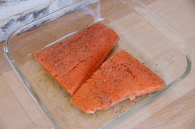
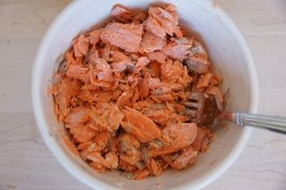
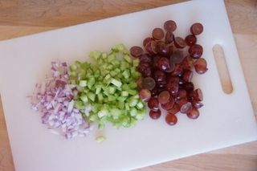
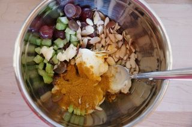
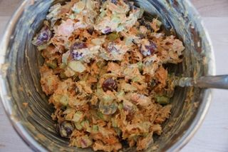

Шаг 1: Подготавливаем ингредиенты.

Красную рыбу для салата можно использовать любую. Учитывайте, что семга жирнее других видов. На мой вкус, идеально подходит форель.
Итак, разогреваем духовку до 200 градусов. Выкладываем филе красной рыбы в форму, солим, перчим, сбрызгиваем оливковым маслом и ставим запекать. Через 15-20 минут рыба будет готова.

Вынимаем рыбу из духовки и оставляем остывать. Затем снимаем кожу, филе перекладываем в миску и измельчаем вилкой.

Другие ингредиенты для салата можно подготовить пока филе остывает - это сэкономит немного времени.
Луковицу очищаем и нарезаем маленькими кубиками. Черешки сельдерея разрезаем вдоль и тоже мелко нарезаем. Ягоды винограда разрезаем пополам.
Шаг 2: Готовим салат с красной рыбой.

В миску кладем подготовленные ингредиенты для салата: лук, сельдерей, виноград. Добавляем миндальные слайсы - тонкие срезы миндаля, специи, майонез и горчицу. Тщательно перемешиваем.
По поводу миндальных слайсов: если их купить не удалось, то возьмите целый миндаль и измельчите в крошку. Очень удобно делать это в ступке.

Добавляем в миску измельченное филе красной рыбы, перемешиваем. Солим немного и обязательно пробуем, может быть нужно добавить еще. Все, салат готов.